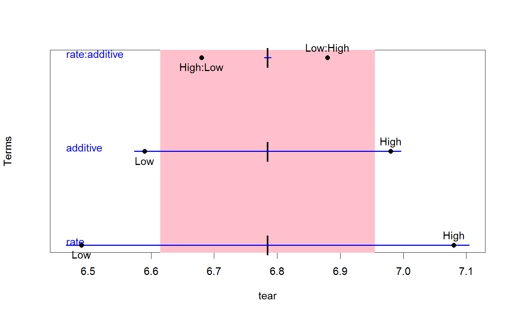
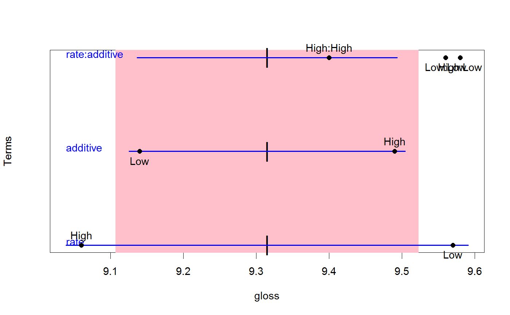
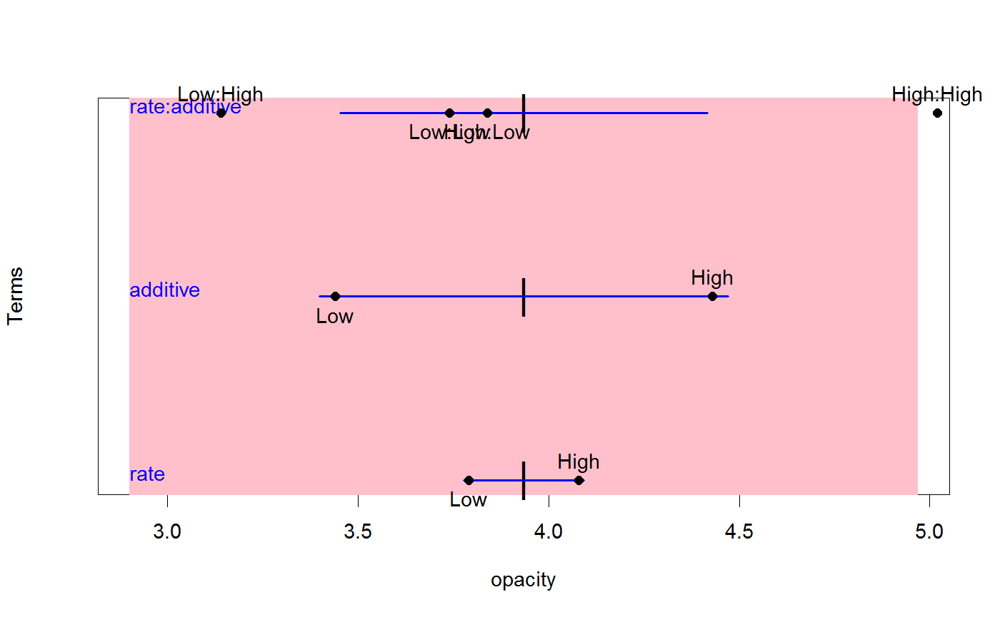

One-Dimensional HE Plots
This function plots a 1-dimensional representation of the hypothesis (H) and error (E) sums-of-squares-and-products matrices for terms and linear hypotheses in a multivariate linear model.
In particular, for a given response, the 1-D representations of H and E matrices correspond to line segments. The E ``ellipse'' is shown as a filled rectangle whose width equals the mean squared error for that response. The H ``ellipse'' for each model term is shown as a line segment whose length represents either the size of the effect or the evidence for that effect. This version is an initial sketch. Details of the implementation are subject to change.
heplot1d(mod, ...) # S3 method for mlm heplot1d(mod, terms, hypotheses, term.labels = TRUE, hyp.labels = TRUE, variables = 1, error.ellipse = !add, factor.means = !add, grand.mean = !add, remove.intercept = TRUE, type = c("II", "III", "2", "3"), idata=NULL, idesign=NULL, icontrasts=c("contr.sum", "contr.poly"), imatrix=NULL, iterm=NULL, manova, size = c("evidence", "effect.size"), level = 0.68, alpha = 0.05, center.pch = "|", col = getOption("heplot.colors", c("red", "blue", "black", "darkgreen", "darkcyan","magenta", "brown","darkgray")), lty = 2:1, lwd = 1:2, xlab, main = "", xlim, axes = TRUE, offset.axes, add = FALSE, verbose = FALSE, ...)
Arguments
| mod | a model object of class |
|---|---|
| terms | a logical value or character vector of terms in the model
for which to plot
hypothesis matrices; if missing or |
| hypotheses | optional list of linear hypotheses for which to plot hypothesis
matrices; hypotheses are specified as for the
|
| term.labels | logical value or character vector of names for the terms to be
plotted. If |
| hyp.labels | logical value or character vector of names for the hypotheses to
be plotted. If |
| variables | indices or names of the two response variables to be plotted;
defaults to |
| error.ellipse | if |
| factor.means | logical value or character vector of names of
factors for which the means
are to be plotted, or |
| grand.mean | if |
| remove.intercept | if |
| type | ``type'' of sum-of-squares-and-products matrices to compute; one of
|
| idata | an optional data frame giving a factor or factors defining the
intra-subject model for multivariate repeated-measures data.
See Details of |
| idesign | a one-sided model formula using the ``data'' in idata and specifying the intra-subject design for repeated measure models. |
| icontrasts | names of contrast-generating functions to be applied by default to factors and ordered factors, respectively, in the within-subject ``data''; the contrasts must produce an intra-subject model matrix in which different terms are orthogonal. The default is c("contr.sum", "contr.poly"). |
| imatrix | In lieu of |
| iterm | For repeated measures designs, you must specify one intra-subject term
(a character string) to select the SSPE (E) matrix used in the HE plot.
Hypothesis terms plotted include the |
| manova | optional |
| size | how to scale the hypothesis ellipse relative to the error
ellipse; if |
| level | equivalent coverage of ellipse for normally-distributed
errors, defaults to |
| alpha | signficance level for Roy's greatest-root test statistic; if
|
| center.pch | character to use in plotting the centroid of the data;
defaults to |
| col | a color or vector of colors to use in plotting ellipses; the first
color is used for the error ellipse; the remaining colors --- recycled
as necessary --- are used for the hypothesis ellipses.
A single color can be given, in which case it is used for all ellipses.
For convenience, the default colors for all heplots produced in a given session can be changed
by assigning a color vector via |
| lty | vector of line types to use for plotting the ellipses; the first is
used for the error ellipse, the rest --- possibly recycled --- for
the hypothesis ellipses; a single line type can be given. Defaults to
|
| lwd | vector of line widths to use for plotting the ellipses; the first is
used for the error ellipse, the rest --- possibly recycled --- for
the hypothesis ellipses; a single line width can be given. Defaults to
|
| xlab | x-axis label; defaults to name of the x variable. |
| main | main plot label; defaults to |
| xlim | x-axis limits; if absent, will be computed from the data. |
| axes | Whether to draw the x, y axes; defaults to |
| offset.axes | proportion to extend the axes in each direction if computed from the data; optional. |
| add | if |
| verbose | if |
| … | arguments to pass down to |
Value
The function invisibly returns an object of class "heplot1d", with
coordinates for the various hypothesis ellipses and the error ellipse, and
the limits of the horizontal and vertical axes.
(No methods for manipulating these objects are currently available.)
The components are:
ranges for the hypothesis terms
range for E
x-axis limits
See also
Anova, linearHypothesis for hypothesis tests in mlms
heplot, heplot3d, pairs.mlm for other HE plot methods
Examples
## Plastics data plastic.mod <- lm(cbind(tear, gloss, opacity) ~ rate*additive, data=Plastic) heplot1d(plastic.mod, col=c("pink","blue"))heplot1d(plastic.mod, col=c("pink","blue"),variables=2)heplot1d(plastic.mod, col=c("pink","blue"),variables=3)## Bees data bees.mod <- lm(cbind(Iz,Iy) ~ caste*treat*time, data=Bees) heplot1d(bees.mod)heplot1d(bees.mod, variables=2)